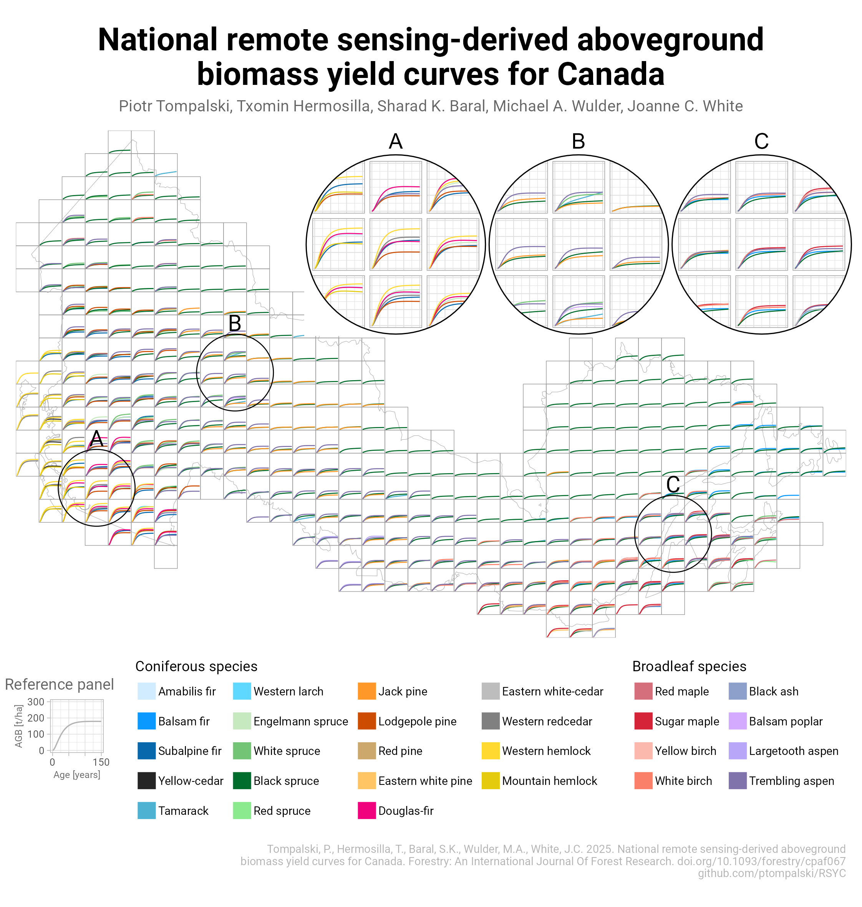
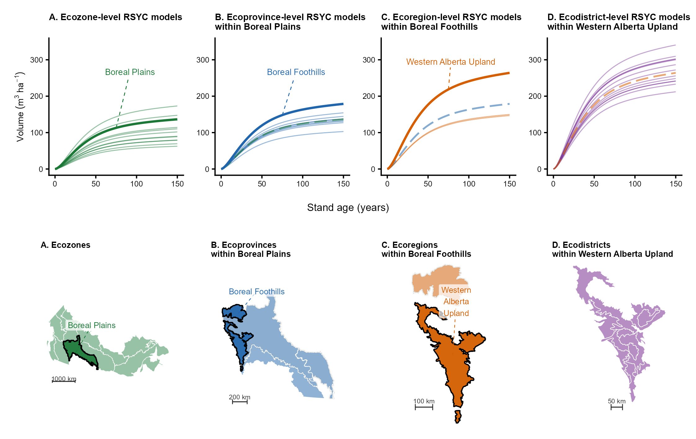
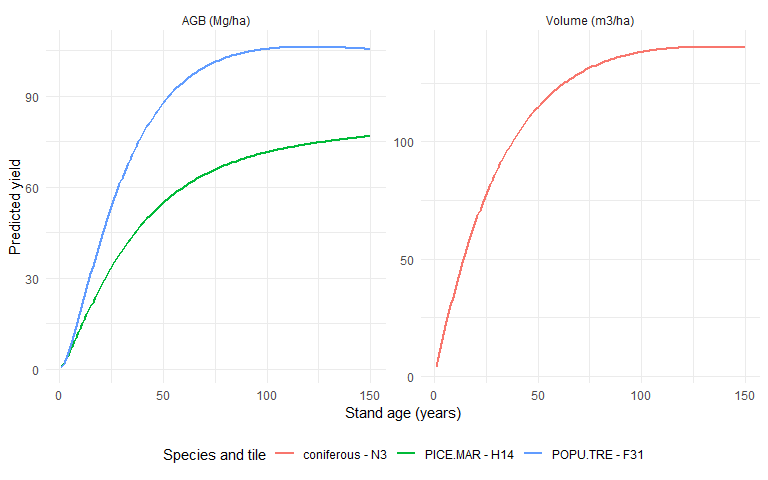

RSYC provides published yield curves for aboveground biomass (AGB, Mg/ha) and total volume (m3/ha). Curves are available for individual species and the generic, coniferous, and broadleaf model groups.
Models are available for 150 x 150 km tiles and four nested ecological levels: ecozone, ecoprovince, ecoregion, and ecodistrict.

Model parameters
You don’t need to install the R package to use the models. All model parameters used in RSYC are available for direct download. The ZIP archive contains the updated RSYC_models.csv table, including AGB and volume models for tiles and ecological strata.
Model parameters: RSYC_models.zip
Tile grid: RSYC_tiles.gpkg
Ecological strata: RSYC_ecostrat.gpkg
The RSYC models predict aboveground biomass (AGB) or total volume as a function of stand age:
\[ y = b_1 e^{-b_4 \mathrm{Age}} (1 - e^{-b_2 \mathrm{Age}})^{b_3}. \]
where
- \(y\) is AGB (Mg/ha) or total volume (m3/ha)
- \(b_1, b_2, b_3, b_4\) are response-, stratum-, and species-specific parameters
- Age is stand age (years)
The curves were fitted for stand ages 1 to 150 years. RSYC warns when asked to estimate outside this age range. Age 0 is also allowed as the starting point of a curve.
Installation
# install.packages("remotes")
remotes::install_github("ptompalski/RSYC")Examples
Estimate biomass or volume
Estimate AGB for black spruce (PICE.MAR) in tile H14 at stand ages 20, 60, and 120 years:
library(RSYC)
predict_rsyc("agb", "PICE.MAR", c(20, 60, 120), "tile", "H14")
#> [1] 27.49419 60.21335 74.19827To estimate total volume instead, set response = "volume":
predict_rsyc(
response = "volume",
species = "PICE.MAR",
age = c(20, 60, 120),
strata_level = "tile",
strata_id = "H14"
)For ecological areas, the area name is enough when it occurs only once at the chosen level:
predict_rsyc(
response = "agb",
species = "PICE.MAR",
age = c(20, 60, 120),
strata_level = "ecodistrict",
strata_id = "Windsor Lowlands"
)Some area names occur in more than one part of Canada. In those cases, predict_rsyc() lists every match. Choose the intended area using the full sequence of ecological areas shown by rsyc_strata().
Compare species and tiles
The following example estimates AGB and volume for several species, stand ages, and tiles. Each row of tile_inputs describes one estimate. All combinations shown below have a published RSYC curve.
tile_inputs <- tidyr::crossing(
response = c("agb", "volume"),
species = c("PICE.MAR", "POPU.TRE", "coniferous"),
age = c(20, 60, 120),
strata_level = "tile",
strata_id = c("H14", "F31")
) |>
dplyr::mutate(
prediction = purrr::pmap_dbl(
list(response, species, age, strata_level, strata_id),
predict_rsyc
)
)
tile_inputsCompare ecological levels
Use the area name at the chosen ecological level when that name occurs only once.
eco_inputs <- tibble::tribble(
~response, ~species, ~age, ~strata_level, ~strata_id,
"agb", "PICE.MAR", 80, "ecozone",
"Atlantic Maritime",
"agb", "PICE.MAR", 80, "ecoprovince",
"Appalachian-Acadian Highlands",
"agb", "PICE.MAR", 80, "ecoregion",
"Appalachians",
"agb", "PICE.MAR", 80, "ecodistrict",
"Windsor Lowlands"
)
eco_inputs <- eco_inputs |>
dplyr::mutate(
prediction = purrr::pmap_dbl(
list(response, species, age, strata_level, strata_id),
predict_rsyc
)
)
eco_inputsThe same species can have different curves at each nested ecological level. The example below shows black spruce volume curves together with the areas they represent:

If a name occurs in several places, list the alternatives and use the full sequence from ecozone to the selected level:
rsyc_strata("agb", "PICE.MAR", "ecodistrict") |>
dplyr::filter(strata_name == "Muskwa")
predict_rsyc(
"agb", "PICE.MAR", 80, "ecodistrict",
"Boreal Cordillera/Hay-Slave Lowlands/Muskwa Plateau/Muskwa"
)Generate several complete curves
The following example produces a complete set of estimates for ages 1 to 150 for each species and area listed in curve_inputs:
curve_inputs <- tibble::tribble(
~response, ~species, ~strata_level, ~strata_id,
"agb", "PICE.MAR", "tile", "H14",
"agb", "POPU.TRE", "tile", "F31",
"volume", "coniferous", "tile", "N3"
)
curve_inputs <- curve_inputs |>
dplyr::mutate(
age = list(1:150),
prediction = purrr::pmap(
list(response, species, age, strata_level, strata_id),
predict_rsyc
)
)
curve_inputs
#> # A tibble: 3 × 6
#> response species strata_level strata_id age prediction
#> <chr> <chr> <chr> <chr> <list> <list>
#> 1 agb PICE.MAR tile H14 <int [150]> <dbl [150]>
#> 2 agb POPU.TRE tile F31 <int [150]> <dbl [150]>
#> 3 volume coniferous tile N3 <int [150]> <dbl [150]>
curve_predictions <- curve_inputs |>
tidyr::unnest(c(age, prediction))Plot the curves to compare how predicted yield changes with stand age. AGB and volume are shown separately because they use different units:
curve_predictions |>
dplyr::mutate(
response = factor(
response,
levels = c("agb", "volume"),
labels = c("AGB (Mg/ha)", "Volume (m3/ha)")
),
curve = paste(species, strata_id, sep = " - ")
) |>
ggplot2::ggplot(ggplot2::aes(age, prediction, colour = curve)) +
ggplot2::geom_line(linewidth = 0.9) +
ggplot2::facet_wrap(ggplot2::vars(response), scales = "free_y") +
ggplot2::labs(
x = "Stand age (years)",
y = "Predicted yield",
colour = "Species and tile"
) +
ggplot2::theme_minimal() +
ggplot2::theme(legend.position = "bottom")
See Prediction examples for a longer walkthrough, including model-availability checks.
Find available curves
Three functions are provided to help identify which model to use:
-
available_rsyc_models()lists individual published curves that match a response, species, type of area, or area name. For example, list the volume curves for black spruce at the ecozone level:
available_rsyc_models(
response = "volume",
species = "PICE.MAR",
strata_level = "ecozone"
)-
rsyc_species()lists the species available for a selected response and area. It also gives each species’ common name and model group. For example, list the AGB species available in tile H14:
rsyc_species(response = "agb", strata_level = "tile", strata_id = "H14")-
rsyc_strata()lists the areas for which models are available for a selected response and species. It gives both the short area name and the full hierarchical area identifier, which can distinguish repeated area names. For example, list the ecozones with volume models for black spruce:
rsyc_strata(
response = "volume",
species = "PICE.MAR",
strata_level = "ecozone"
)Create spatial yield-curve datasets
rsyc_product() prepares yield estimates and the matching area boundaries. The boundaries are stored separately so the same map shape is not repeated for every species and stand age. By default, the function estimates ages 1 through 150:
product <- rsyc_product(
response = "volume",
species = c("PICE.MAR", "POPU.TRE"),
age = 1:200,
strata_level = "ecodistrict"
)
product$spatial
product$curves
product$metadataThe spatial map contains strata_id, the ecological area names, and the area shapes. For tiles, it contains only strata_id and the tile shapes. The curves table records the model, area, species, stand age, and estimated yield. The metadata table summarizes the units, model version, equation, and choices used to create the results.
Use output = "rsyc_volume.gpkg" to save the map, yield curves, and summary information together in one GeoPackage file.
Presentations and papers
For a visual introduction to the models, start with the RSYC overview. A second presentation, RSYC at IBFRA 2026, focuses on their use in national forest growth and carbon assessment.
Tompalski, P., Hermosilla, T., Baral, S.K., Wulder, M.A., White, J.C. 2025. National remote sensing-derived aboveground biomass yield curves for Canada. Forestry: An International Journal of Forest Research. https://doi.org/10.1093/forestry/cpaf067
Tompalski, P., Wulder, M.A., White, J.C., Hermosilla, T., Riofrio, J., Kurz, W.A. 2024. Developing aboveground biomass yield curves for dominant boreal tree species from time series remote sensing data. Forest Ecology and Management 561, 121894. https://doi.org/10.1016/j.foreco.2024.121894